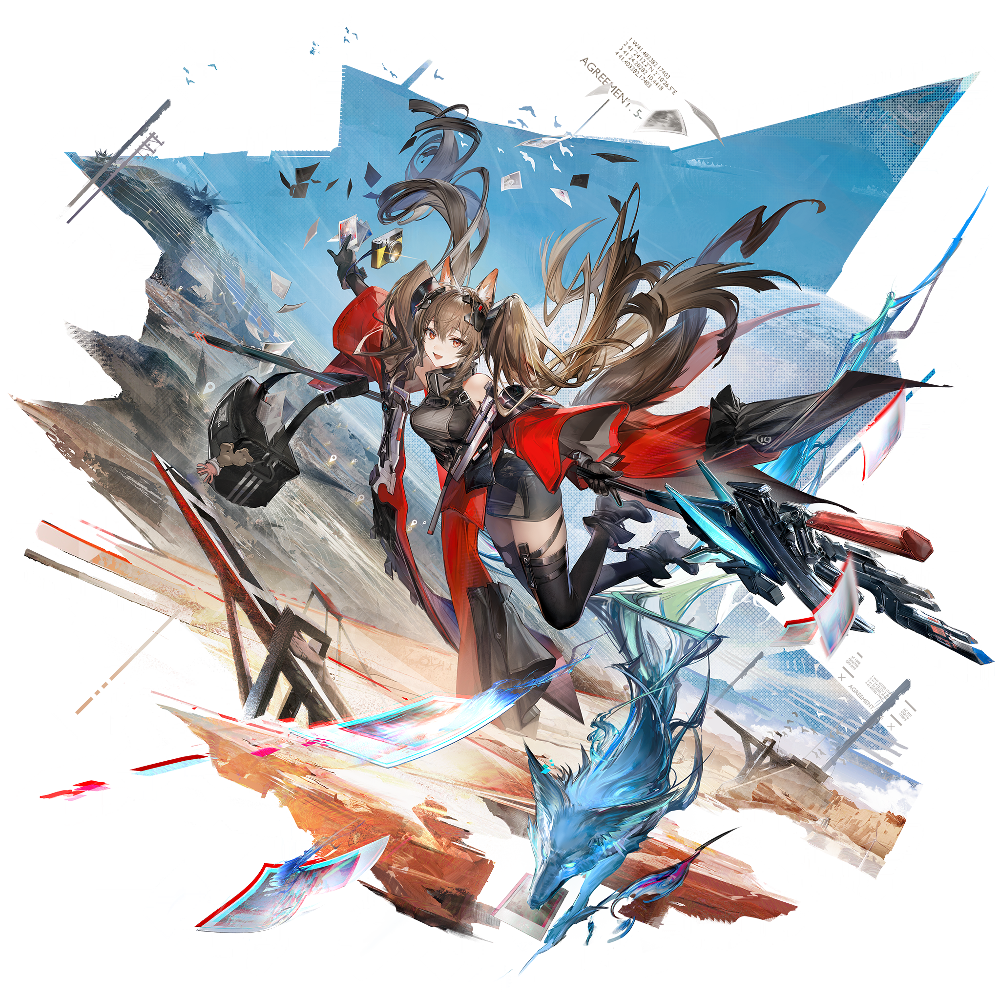
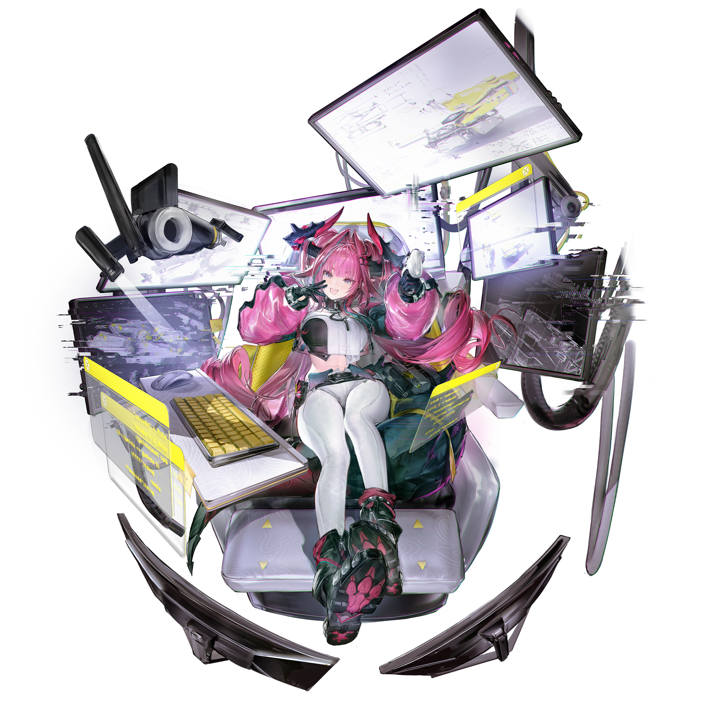

音声付きで公式PVを再生しますか？
天災の爪痕残る未開惑星「タロII」。エンドフィールド工業の「管理人」となり、未知なるフロンティアを切り開け。
ARKNIGHTS, ENDFIELD
帝江号は、タロIIの軌道上に位置する飛行ユニットで、エンドフィールド工業の拠点として機能している。

Gilberta
Zoan

Yvonne
このサイトはWeb制作学習の授業課題として制作した比較用のサイトです。作品に関する著作権・商標権等は各権利者に帰属します。